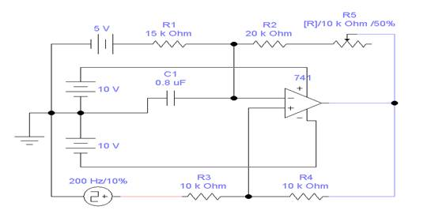
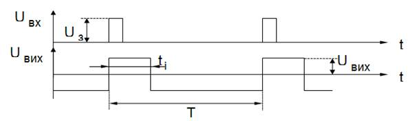
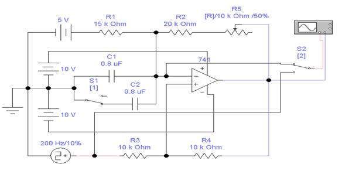
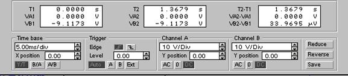

Розробив: Малярчук В.О.
Час виконання роботи 4 год
Лабораторна робота № 11
Дослідження одновібратора на операційному підсилювачі
Ціль роботи
1. Придбання практичних навичок при побудові часових діаграм і визначенні параметрів вхідних та вихідних імпульсів одновібратора.
2. Експериментальне дослідження впливу зміни номіналів елементів, що змінюють час переключення одновібратора, на вихідні параметри одновібратора.
Короткі теоретичні відомості
Одновібратором (чекаючим, заторможеним мультивібратором) - називається генератор прямокутних імпульсів, який у відповідь на один запускаючий імпульс генерує один прямокутний вихідний імпульс із заданими параметрами.
Одновібратор на операційному підсилювачі дозволяє отримати вихідні імпульси майже ідеальної прямокутної форми і дає можливість змінювати тривалість імпульсів tu, і частоту повторення в широких межах. Схема одновібратора приведена на рис.1.

Рис.1. Принципова схема одновібратора на операційному підсилювачі
Схема працює наступним чином. При відсутності імпульсів, що запускають одновібратор на виході ОП напруга рівна від'ємній напрузі насичення Uвих-, так як при цьому напруга на інвертую чому вході більше напруги на неінвертуючому вході. При поступленні вхідного імпульсу додатної полярності від джерела запуску, тривалість якого повинна бути менше тривалості вихідного імпульсу, на виході одновібратора формується напруга додатної полярності Uвих+. При цьому конденсатор С1 буде перезаряджатися через резистор R2, після чого на виході ОП знову встановиться початкова напруга Uвых-. Змінюючи ємність конденсатора C1, можна змінювати тривалість вихідного імпульсу. На рис.2. приведена часова діаграма одновібратора.

Рис. 2. Часова діаграма одновібратора
Опис віртуальної лабораторної установки
Схема віртуальної лабораторної установки приведена на рис.3.

Рис.3. Схема віртуальної установки одновібратора на операційному підсилювачі
У схему входять: операційний підсилювач Мс741 з двополярним живленням +10В, -10В; часозадаючих конденсаторів С1 і С2 та перемикача S1 для їх комутації, часозадаючого реостата R5 (величину якого можна змінювати клавішею R); джерело напруги зсуву Uf – 5В, за допомогою якого мультивібратор загальмовується в стійкому стані і при цьому на виході, напруга насичення має від'ємну полярність Uвих-; джерело імпульсів Uз, що запускає одновібратор; двохпроменевого осцилографа, на канал “A” якого подається запускаючий імпульс, чи імпульс з інверсного входу операційного підсилювача (комутація здійснюється за допомогою перемикача S2), а на канал “В”- вихідний імпульс.
Домашнє завдання
Вивчити принцип дії і призначення елементів схеми одновибратора на ОП.
Завдання і порядок виконання роботи
1. Відкрийте файл Вар_ФКC.xls в відповідності з своїм варіантом випишіть значення величин (частоту джерела імпульсів; ємності часозадаючих конденсаторів С1, С2).
2. Підготувати віртуальну лабораторну установку до роботи:
– перемикач S1 клавіша ”1” перевести у положення ”1”, при цьому включений тільки один конденсатор С1;
– перемикач S2 клавіша ”2” перевести у положення ”1”, при цьому на вхід ”А” осцилографа буде подаватися запускаючий імпульс;
– включити осцилограф, двічі клацнувши лівою кнопкою миші на його піктограмі. Встановити на осцилографі наступні масштаби (приведено один із варіантів завдання)

3. Запустити лабораторну установку на моделювання. При цьому на екрані осцилографа з'явиться часова діаграма одновібратора. На каналі “A” червоним кольором зображаються вхідні запускаючі імпульси, а на каналі “B”(синім кольором) – діаграма вихідних імпульсів.
Нажавши ”Паузу” замалювати в масштабі часову діаграму одновибратора і за допомогою вертикальних візирних лінійок “1” і ”2” осцилографа визначити наступні параметри: Uз, Uвих-, Uвих+, tі, Т.
– перемикач S2 клавіша ”2” перевести у положення ”2” , продовжити роботу установки та замалювати часову діаграму зміни напруги на інверсному вході операційного підсилювача і за допомогою вертикальних візирних лінійок “1” і ”2” осцилографа визначити час заряду tз та розряду tр конденсатора С1.
4. Перемикач S1 в положення ”2”, а S2 в положення ”1”. Виконати пункт 3.
Вимкнути осцилограф і схему.
У пунктах 3 – 4 зробити виводи.
Зміст звіту
Звіт повинен бути оформлений на листах паперу і містити:
- Ціль лабораторної роботи і номер варіанту.
- Принципову схему віртуальної лабораторної установки.
- Часові діаграми роботи одновибратора при мінімальних значеннях часозадаючих конденсаторів з значення параметрів: Uз, Uвих-, Uвих+, tі, Т, tз, tр.
- Часові діаграми роботи одновибратора для максимального значення часозадаючих конденсаторів з значення параметрів: Uз, Uвих-, Uвих+, tі, Т, tз, tр.
- Виводи, що базуються на аналізі отриманих результатів.
Контрольні питання
- Що таке одновібратор?
- Як ще називають одновібратор?
- Для яких цілей використовують одновібратор?
- Від яких елементів схеми залежать параметри Uз, Uвих-, Uвих+, tі, Т, tз, tр одновібратора?
- Намалювати часову діаграму роботи одновібратора.
- Пояснити сенс параметрів вхідного і вихідного імпульсів.